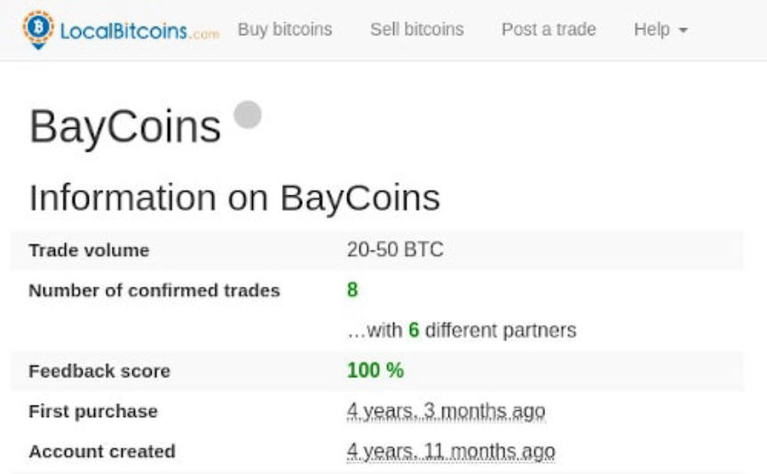
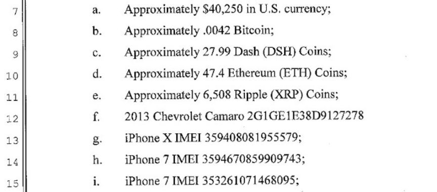
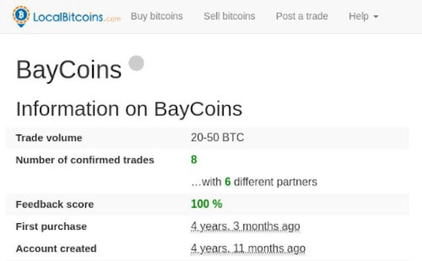
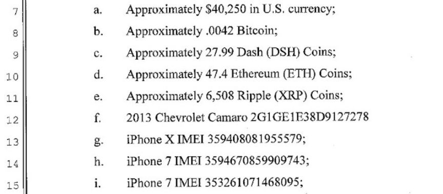

San Diego Darkweb Drug Vendors Plead Guilty to Money Laundering
~2 min read | Published on 2019-10-01, tagged Darkweb-Vendor, Money-Laundering, Pleaded-Guilty using 475 words.
A San Diego duo on September 30 admitted to a federal court that they conspired to launder proceeds they acquired from selling drugs on the dark web. The defendants reportedly run an unlicensed bitcoin for cash only exchange and used it to launder drug trafficking profits.
According to U.S. Attorney’s Office, San Diego 25-year-old Connor Brooke and 23-year-old Aidan Curry owned and operated a money-transmitting business in San Diego called BayCoins. Curry and Brooke enabled users of BayCoins to exchange bitcoin for cash at a non-negotiable 5% fee. In their advertisements, the duo promised to provide “quick, easy and hassle-free” services and described their business as the “craigslist of bitcoin.” Being unregistered and unlicensed, the two men operated the business anonymously. They, however, broke this norm in late 2018 by posting their personal information online while looking for new clients.
The attorney’s office also disclosed Curry and Brooke used the profits made from BayCoins to purchase marijuana that they then sold on undisclosed dark web marketplaces for bitcoin. The duo then sold the bitcoins acquired from the drug sales on BayCoins for more profit.
When announcing the guilty plea U.S. Attorney for the Southern District of California Robert Brewer, said federal authorities would continue to move against money laundering and drug trafficking organizations or individuals that use the anonymity provided by the dark web, unlicensed crypto exchanges, and sophisticated software. He also said his office would continue to treat noncompliance to anti-money laundering laws as a crime.
Speaking during the Special announcement agent in charge of Homeland Security Investigations (HSI) in San Diego said: “Homeland Security Investigations Special agents worked diligently to uncover this dark web scheme led by Curry and Brooke.” He also said the investigations that led to the duo’s arrest and admission of guilt demonstrates the partnership and commitment of the HSI and the Department of Justice to the fight against illicit activities on the dark web.
In addition to pleading guilty, the two men agreed to forfeit thousands of dollars in cash, an undisclosed amount of cryptocurrency and high-end electronic devices that include, computers, phones, hard drives, and storage devices.
Curry and Brooke will be sentenced on January 6, 2020. Apart from a $500,000 fine, the duo could be sentenced to a maximum of 20 years in prison.
Curry and Brooke’s case resembles that of another San Diego dark web Vendor who was in August sentenced to 5 years and ten months in prison. Like Curry and Brookes 39-year-old Sky Justin Gornik pleaded guilty to dark web drug trafficking and using money laundering. Gornik reportedly used multiple dark web marketplaces including Alpha Bay, Trade Route, Dream to sell and purchase methamphetamine, oxycodone pills, ketamine, amphetamine, and other drugs. Apart from the 70 months prison sentence, Gornik forfeited millions of dollars in cryptocurrencies including bitcoin, monero, and Ethereum
According to U.S. Attorney’s Office, San Diego 25-year-old Connor Brooke and 23-year-old Aidan Curry owned and operated a money-transmitting business in San Diego called BayCoins. Curry and Brooke enabled users of BayCoins to exchange bitcoin for cash at a non-negotiable 5% fee. In their advertisements, the duo promised to provide “quick, easy and hassle-free” services and described their business as the “craigslist of bitcoin.” Being unregistered and unlicensed, the two men operated the business anonymously. They, however, broke this norm in late 2018 by posting their personal information online while looking for new clients.
The BayCoins LocalBitcoins Account
The attorney’s office also disclosed Curry and Brooke used the profits made from BayCoins to purchase marijuana that they then sold on undisclosed dark web marketplaces for bitcoin. The duo then sold the bitcoins acquired from the drug sales on BayCoins for more profit.
When announcing the guilty plea U.S. Attorney for the Southern District of California Robert Brewer, said federal authorities would continue to move against money laundering and drug trafficking organizations or individuals that use the anonymity provided by the dark web, unlicensed crypto exchanges, and sophisticated software. He also said his office would continue to treat noncompliance to anti-money laundering laws as a crime.
Speaking during the Special announcement agent in charge of Homeland Security Investigations (HSI) in San Diego said: “Homeland Security Investigations Special agents worked diligently to uncover this dark web scheme led by Curry and Brooke.” He also said the investigations that led to the duo’s arrest and admission of guilt demonstrates the partnership and commitment of the HSI and the Department of Justice to the fight against illicit activities on the dark web.
The Items and Cryptocurrency Forfeited by Curry and Brooke
In addition to pleading guilty, the two men agreed to forfeit thousands of dollars in cash, an undisclosed amount of cryptocurrency and high-end electronic devices that include, computers, phones, hard drives, and storage devices.
Curry and Brooke will be sentenced on January 6, 2020. Apart from a $500,000 fine, the duo could be sentenced to a maximum of 20 years in prison.
Curry and Brooke’s case resembles that of another San Diego dark web Vendor who was in August sentenced to 5 years and ten months in prison. Like Curry and Brookes 39-year-old Sky Justin Gornik pleaded guilty to dark web drug trafficking and using money laundering. Gornik reportedly used multiple dark web marketplaces including Alpha Bay, Trade Route, Dream to sell and purchase methamphetamine, oxycodone pills, ketamine, amphetamine, and other drugs. Apart from the 70 months prison sentence, Gornik forfeited millions of dollars in cryptocurrencies including bitcoin, monero, and Ethereum